Evaluating Slope Stability in Forest Uplands with Deterministic and Probabilistic Models
Thomas E. Koler
Intermountain Natural Resource Consultants, 5258 Matson Road, Viola, ID 83872
| USDA Forest Service | Rocky Mountain Research Station | Moscow FSL | Soil and Water Engineering |
|---|
|
|
Evaluating Slope Stability in Forest Uplands with Deterministic and Probabilistic Models
Thomas E. Koler |
Deterministic Level I Stability Analysis (DLISA) and probabilistic Level I Stability Analysis (LISA) models provide information for a slope stability analysis. These computer codes have been developed, tested, and validated by U. S. Department of Agriculture Forest Service researchers. The purpose of this research was to provide engineers and scientists a personal computer program for evaluating potential slope instability within planning areas in forested uplands. Physical soil values within the infinite slope equation are evaluated within DLISA for possible frequency distributions. LISA, the probabilistic computer program, adds a stochastic simulation by the Monte Carlo method of these frequency distributions. The result from these analyses is a probability of slope failure. Potential shallow landslides, such as debris flows, have been evaluated since 1987 and can be predicted with DLISA and LISA.
Researchers have applied the infinite slope equation as the governing equation for evaluating shallow landslides on long hill slopes, and for studying the mechanics of these landslides on forested uplands (Pierson, 1977; Beschta, 1981; Sidle and Swanston, 1982; Burroughs, 1984; Dietrich et al., 1986; Benda and Dunne, 1987; Benda, 1988; Reneau, 1988; Benda, 1990; and Benda, 1994). Similar work has also been completed near urban areas within the San Francisco Bay area (Nilsen et al., 1976; Wieczorek, 1982). The role of vegetation to slope stability, including the effect of tree root strength and tree surcharge (O'Loughlin, 1974; Swanston, 1974; Ziemer and Swanston, 1977; Burroughs and Thomas, 1977; Ziemer, 1981; O'Loughlin and Ziemer, 1982; and Greenway, 1987), has been identified in these studies as an important component of overall hill slope stability. Several models have resulted from these studies and are used by practitioners for natural resource agencies, counties, municipalities, and consulting companies.
The deterministic (DLISA) and probabilistic Level I stability analysis (LISA) computer codes are models intended to predict landslide hazards for planning areas that are typically several square miles in area (Hammond et al., 1992). Level I is the first in a three-level system developed by Prellwitz (1985) and used by many geotechnical specialists in the U.S. Department of Agriculture, Forest Service (Koler and Neal, 1989; Koler, 1993; and Prellwitz and Koler, 1994). Level II is for evaluating a pre-construction road corridor, and Level III is for site-specific analysis within a road prism or proposed timber harvest sale unit. The infinite slope equation is the governing equation in DLISA, LISA and Level II stability analyses. The method of slices equations are the governing equations in the Level III stability analysis. The typical scales used for mapping are 1:24,000 for Level I, 1:3,600 for Level II and 1:120 for Level III. DLISA and LISA are distributed together along with the user guide (Hammond et al., 1992), are within the public domain, and are available from the author. The programs have also been distributed through the Internet's sci.engr.geomechanics USENET newsgroup, and are available through the Internet World Wide Web page with the address of https://forest.moscowfsl.wsu.edu/engr/lisa0.html.
The purpose of this paper is to demonstrate the use of DLISA and LISA codes to predict debris flow activity. An example is provided, with data from a slope stability hazard assessment near Leavenworth, Washington, to illustrate how to apply these two models.
where:
Eq. 1
FOS = factor of safety
α = slope of the ground surface, degrees
D = total soil depth, (L)
Dw = saturated soil depth, (L)
Cr = tree root strength expressed as cohesion, (F/L2)
qo = tree surcharge, (F/L2)
Cs′ = effective soil cohesion, (F/L2)
φ′ = effective angle of internal friction, degrees
γ = moist soil unit weight, (F/L3)
γsat = saturated soil unit weight, (F/L3)
γw = water unit weight, (F/L3).
The computer code DLISA solves the infinite slope equation for soil depth, surface slope, root cohesion, tree surcharge (weight of trees applied uniformly over the slope), ground-water ratio (ratio of the depth of water to the depth of soil), friction angle, soil cohesion, and factor of safety (Hammond et al., 1991a). A common application of DLISA is a sensitivity analysis to identify the most important variables of the infinite slope equation using a method developed by Simons and others (1978). Another common application is to determine soil depths where soil inventories are lacking this information. These soil depths are then included in analyses by foresters, soil scientists, hydrologists, and other resource scientists. Similar work can also be done for slope, ground-water ratio, and other parameters. Figure 1 displays the geometry of these parameters.
LISA DESCRIPTION
The probabilistic computer code LISA enables the user to compute the probability of slope failure using up to 1,000 iterations of a Monte Carlo simulation by varying the input values to the infinite slope equation (Hammond et al., 1991b). DLISA and LISA use the same parameters. In preparing parameter data for LISA input, the user defines the statistical distribution of the parameter values, which vary spatially, temporally, and with uncertainty (data gaps and resolution). There are several ways to display the data distributions and to incorporate within the probability analysis. These distributions include uniform, triangular, normal, lognormal, beta, and histogram. Constant values also may be used. A bivariate normal distribution is available in the program for modeling the correlation between soil cohesion and friction angle. The FOS derived from LISA is conditional because parameters do not remain static.
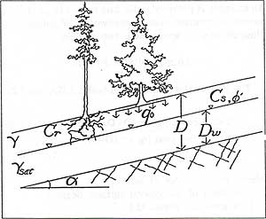
Figure 1. Parameters used in the infinite slope equation for DLISA and LISA.
Soil depth can be converted to thickness, z, with the formula z = D cos α.
The user guide for LISA explains in detail
how the program works (Hammond et al., 1992). The LISA user follows these
general steps after polygons (areas of similar soils and slope conditions)
have been delineated for a study area:
The spatial distribution of values being evaluated is important in completing a sensitivity analysis. Usually, concave, gentle slopes have deeper soils than do convex, steep slopes; soil depth on planar slopes is somewhere between. Areas of tree mortality from wildfire, insect infestation, disease, and timber harvesting influence the spatial distribution of tree root strength and tree surcharge. Because values may vary widely over a given area, the specialist will need to divide the study area into polygons where variable distribution values are spatially similar. The LISA computer program can then evaluate the values for each polygon.
Information obtained from LISA is commonly used by Forest Service professionals to complete a hazard/risk analysis. The results from this analysis can be incorporated in a report to help resource managers in their decision-making activities. These decisions are usually for forest plans, watershed analyses, and proposed timber sales.
Both professionals and managers often confuse the relationship between a LISA probability and a hazard/risk assessment. Hazards are the natural geologic conditions that have slope movement potential. Resource risks such as fish and wildlife habitat, water quality, roads, structures, and scenery have the potential to be affected by the hazards (Koler, 1994). Risk can be described as a function of both probability and consequence (Remboldt, 1995):
Risk = ƒ (Probability, Consequence) Eq. 2
A probability of failure is not assigned to an actual landslide site within
the evaluated polygon in LISA. LISA also does not address the size or consequence
of the failure. It does, however, give a polygon landslide probability that
when used with consequences may provide a risk assessment. Consequences can
include loss of life, personal injury, property damage and loss, degradation
of fish and wildlife habitat, increased maintenance costs, and mitigation costs.
Some Forest Service professionals will assign a monetary value for consequence
and multiply it by the LISA probability to predict a risk for roads, structures,
and municipal watersheds. Risk is more difficult to predict for other resources
such as visual aesthetics and wildlife habitat. Four steps are necessary to
complete a hazard/risk assessment:
A LISA probability will not identify where a landslide will occur at a specific
site within a polygon. However, the code can be used with historical records
(such as aerial photographs, weather data, road construction and maintenance
records) to find a probability threshold for possible debris flow activity.
This probability threshold can then be used in conjunction with other models
to determine the possible initiation of debris flow activity and location of
deposition.
The missing piece in LISA is the role of rainfall and antecedent moisture relative to incipient slope movement. By integrating available rainfall and antecedent moisture models with DLISA and LISA, the resolution for the probability threshold can be increased. It then may be feasible to predict the timing of incipient slope movement. Possible existing methods for this integration are those described by Nilsen and others (1976), Mark and Newman (1990), and Wilson and Wieczorek (1995). Possible runout distance and deposition from this debris flow activity can then be predicted with the Benda-Cundy model (Benda and Cundy, 1990).
Forest Service engineers, geologists, and resource scientists identify and predict
possible debris flow activity with DLISA and LISA (for example, Koler et al.,
1995). These specialists provide resource managers with a scientifically valid
analysis and minimize the subjectivity that can occur in slope stability work
at the planning scale (1:24,000). For example, many debris flows are initiated
within concave-shaped slopes, but not all concave slopes have the right materials
and conditions for incipient movement. This analysis is a process to eliminate
possible debris flow initiation sites. There are seven steps in this process:
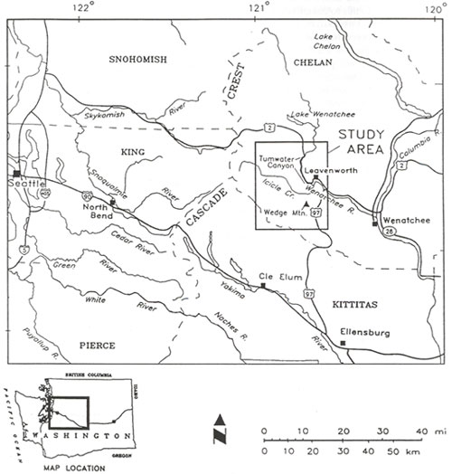
Figure 2. Location map of example study area on Tumwater Mountain in central Washington State.
The example site is on Tumwater Mountain near Leavenworth in central Washington
(Figure 2). Koler and others (1995) evaluated this area
for potential slope stability hazards that may result from the 1994 wildfire.
The Wenatchee National Forest, Washington State Department of Transportation,
Chelan County, and the city of Leavenworth are applying information from this
study in their planning projects.
Tabor and others (1987) mapped the bedrock in
this area as Mesozoic plutonic rock (primarily granite, granodiorite, and tonalite)
in contact with metamorphic rock (mostly schist).
Trees are
Douglas-fir (Pseudotsuga menziesii),
ponderosa pine (Pinus ponderosa), and
grand fir (Abies grandis).
Soils were classified in the field and in the laboratory, using the Unified
Soil Classification System (after Howard, 1984), as silty sands and gravel with
no or little plasticity (SM and GM). In many areas, the trees were killed by
wildfire. In some locations, the trees and roots were completely removed by
wildfire, leaving behind soil macropores (Figure 3). Field crews measured several
cross sections across the slopes mapping subsurface materials and conditions.
From this fieldwork the average slope angle, in most areas, was about 33°.
Several assumptions are made for step 1.
Silty sands and gravels with little or no plasticity usually have an average dry unit
weight of 100 pounds/square ft (psf), a moisture content of 0.25, an angle of
internal friction between 27° and 33°, and soil cohesion of 0 to 40
psf (Terzaghi and Peck, 1967; Hammond et al., 1992). In this example, we assume
an average of 30° for friction angle, and an average of 20 psf for soil
cohesion. An average tree surcharge of 25 psf and root cohesion of 88 psf is
also assumed (Greenway, 1987; Hammond et al., 1992).
In step 2, DLISA solves for soil depth for various
slope angles by varying the ground-water ratio, by keeping other values constant,
and by assigning an FOS of 1.0. Results from step 2 (Table
1) show that for slope angles less than the average slope of 33°, soil
depths are quite thick, even for an FOS of 1.0. Also, for high ground-water
ratios (>0.5), soil depths do not drop to 5 ft or less until the slope angles
are greater than 31°.
CASE STUDY OF DLISA AND LISA APPLICATION
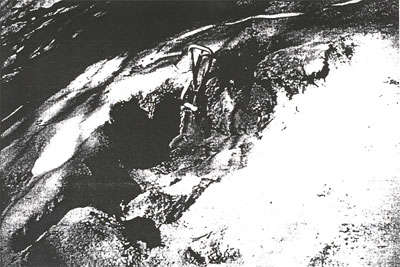
Figure 3. Complete tree root loss and macropore development from wildfire.
Most areas reconnoitered had soil depths less than 5 ft, and in many areas the depths averaged 2.5 ft. The soil resource inventory for the Wenatchee National Forest also shows soil depths of less than 5 ft. It seems unlikely that deeper soils occur on these slopes. Step 3 may seem simplistic and unnecessary, but frequently an error will occur because of the "black box effect" (if the model says so, it must be fact). Figure 4 shows a lognormal distribution curve for soil depths estimated in step 3. These depths are derived from judgment of the engineer or scientist to cover the reasonable values from Table 1. A lognormal curve was selected because some portions of the slopes on Tumwater Mountain are concave, and it is quite possible that in these areas the soil depths may reach 4 to 5 ft.
Table 1. Soil depths predicted by DLISA assuming a factor of safety of 1.0.
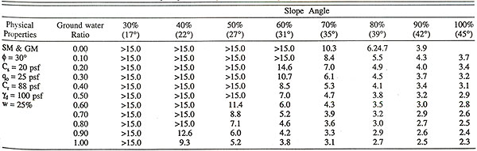
φ = soil friction angle, Cs = soil cohesion, qo = tree surcharge, Cr = tree root cohesion, γd = dry unit weight, w = moisture content
For step 4, DLISA runs were completed using soil
depths of 3, 4, and 5 ft (Tables 2, 3,
and 4). In Tables 2 through 4, a ground-water ratio is
given for each FOS and slope angle. For example, in Table 2 there is a preponderance
of ground-water ratios with values of 1.0. This indicates the ground-water depth
is equal to the soil depth. Or in other words, Table 2
shows 3-ft-deep soils on most slope angles can be saturated (or nearly so) and
remain stable. Slope failure does not occur until the slope angle is 39°
or greater and the ground-water ratio ranges from 0.48 to 0.96. This stability
may be because of the presence of tree roots. Local historical information (aerial
photographs, road maintenance records, newspaper articles, and resident surveys)
indicates that most debris flow activity occurs when root strength is lowered
(for example, by wildfire and disease). It is also well documented in the literature
that root strength is a significant factor in shallow soil stability. Tables
3 and 4, however, show 4- and 5-ft-deep
soils on steep slopes (>35°) are sensitive to increases in soil
moisture. In these cases trace amounts of moisture (0.00 to 0.08 ground-water
ratios) are sufficient for failure to occur on 45° hill slopes. For hill
slopes with slope angles ranging from 35° to 42° the ground-water ratios
are higher for unstable conditions and range from 0.16 to 0.80. It appears that
the presence of vegetation on slopes with deeper soils is not as important as
it is with the 3-ft-deep soils.
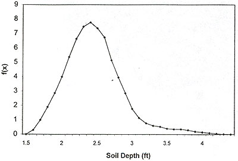
Figure 4. Lognormal distribution of soil depths using Deterministic Level I Stability Analysis (DLISA)
with a mean of 2.75, and a standard deviation of 0.55 covers the expected soil depths.
Frequency distributions for ground-water ratio, tree surcharge after disturbance, and root cohesion after disturbance are selected in step 5. For example, the user will need to build frequency distributions for each slope angle (or ranges of slope angles) because the ground-water ratio will fluctuate differently for gentle gradient slopes than it will for steep slopes. Figure 5 shows a histogram distribution for the ground-water ratio of several steep slope gradients (70, 80, 90, and 100 percent) that were summed for the histogram. Although a histogram was used in this case, the LISA operator may wish to describe the frequency distribution with another type of curve (e.g., uniform, triangular, normal, lognormal, and beta).
Table 2. Ground-water ratios for 3-ft-deep soils with same physical properties in Table 1.
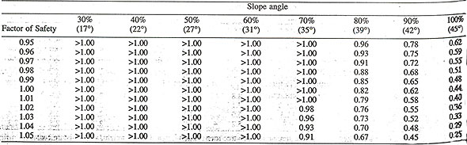
Figures 6 and 7 show lognormal distributions for tree surcharge and root cohesion after some form of disturbance, such as wildfire, disease, and timber harvesting. Based on field observations in this example, the average tree surcharge was reduced by almost 75 percent. Complete tree loss occurred in some areas (Figure 3). The distribution for tree surcharge is lognormal because in some protected pockets on slopes, the trees were not burned as intensely as in other areas. Therefore, the tree surcharge in these areas is closer to the preburn (undisturbed) value of 40 psf. A similar logic was used in establishing the distribution for root cohesion. However, the average root cohesion value was reduced by more than 75 percent of the preburn value because brush vegetation, which contributes greatly to the root strength value, has a higher mortality from wildfire.
In step 6, the data from the first five steps are used in LISA to estimate the probability of slope movement for each analysis polygon. Table 5 shows probabilities for an FOS less than 1 (P [FOS≤1]) for undisturbed slopes. For all slope gradients combined, the probability for slope failure is 1 percent, and for the steeper slopes the probability is 10 percent. Table 6 shows probabilities of failure for disturbed slopes. The values change greatly because of the loss of root strength. All slopes combined are predicted to have a 10 percent probability of failure and the steep slopes (>35°) had probabilities of failure ranging from 45 to 73 percent. At this point in the analysis, the probabilities are meaningless because we have no frame of reference. For example, do we know whether 10 percent probability is high or low? Undoubtedly, 73 percent is a high probability, but what about 45 percent? The next step is to compare the LISA results with previous slope movement activity in the study area.
Most Forest Service specialists complete a time-series aerial photographic analysis in step 7. If stereo-pair aerial photographs for several years are available, this task becomes a simple exercise in comparing previous slope movement with the slope instability predicted by LISA. If aerial photographs are not available or if the photographic record is sporadic, this step is difficult and, in most cases, requires additional field work (colloquially referred to as ground-truthing). Fortunately, the aerial photographic record of Forest Service lands in the Western United States is comprehensive from the 1940s to the present.
Aerial photographs from the 1940s to the present were available for the wildfire study. Thirty-eight debris flow movements, occurring between 1949 and 1992, were identified and compared to information obtained in the field reconnaissance and LISA results. When the comparison of observed slope movements to predicted slope movements is completed, the LISA probabilities become meaningful. In the wildfire study, the 25 percent probability value was identified as a threshold for a medium hazard rating; similarly a 50 percent probability was the high hazard rating threshold.
To estimate the risk in a study area, the specialist needs to identify consequences, such as loss of roads, bridges, wildlife habitats, viewsheds, and water quality. The consequences can be estimated by an economic cost analysis for tangible items, such as roads and bridges. For other resources, such as habitats and viewsheds, this is not easily done. In the wildfire study a comprehensive risk analysis is not complete, but consequences were identified and discussed. Risk analysis work for this study will be completed in the near future.
Table 3. Ground-water ratios for 4-ft-deep soils with same physical properties in Table 1.
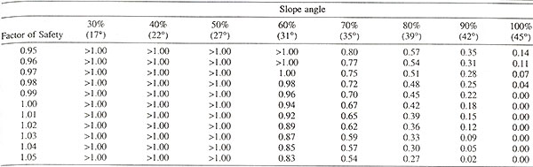
Table 4. Ground-water ratios for 5-ft-deep soils with same physical properties in Table 1.
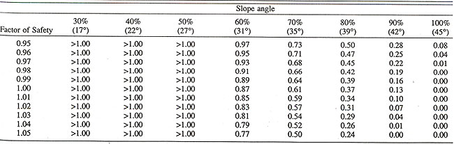
Table 5. Factor of safety predicted by LISA for undisturbed slopes.
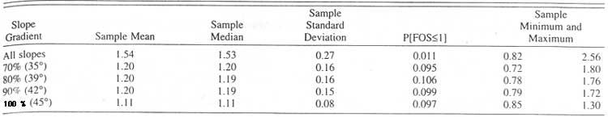
Table 6. Factor of safety predicted by LISA for disturbed slopes.
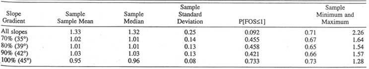
Forest Service specialists have been using the DLISA and LISA models for nearly
a decade in evaluating hill-slope instability probabilities for study areas
mapped at a 1:24,000 scale. Using historical records and aerial photographs
from past years, the slope stability specialist can build a landslide database
for predicting future mass movements on hill slopes. Data from this landslide
database, in conjunction with data collected during field reconnaissance, are
used in DLISA to develop frequency distributions for the infinite slope equation
variables in LISA. Although these models will not predict a specific location
for a landslide initiation site, they can be applied in hazard/risk assessments.
These hazard/risk assessments can then be available for other resource professionals
and managers.
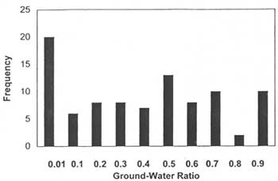
Figure 5. Frequency distribution of ground-water ratio for 70, 80, 90, and 100 percent slopes,
assuming an FOS of 1.0 in DLISA.
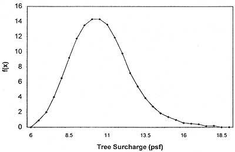
Figure 6. A lognormal distribution of tree surcharge after disturbance
(for example, wildfire, disease and timber harvesting)
using DLISA with a mean of 12.0, and standard deviation of 3.0 covers the expected
range of tree surcharge values.
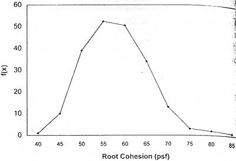
Figure 7. Lognormal distribution for root cohesion after disturbance
using DLISA with a mean of 59.0,
and a standard deviation of 7.75 covers the expected range of root cohesion values.
I wish to thank the several colleagues within the U.S.D.A. Forest Service Intermountain Research Station who helped me in preparing this paper. In particular, Randy Foltz provided valuable insight with rainfall and hill slope hydrology; and William Elliot and David Hall gave me several suggestions for manuscript clarity. Courtney Cloyd, Siuslaw National Forest, provided suggestions from a user's perspective. I also thank the three anonymous reviewers for their suggestions for improving the manuscript.
BENDA, L. E., 1988, Debris flows in the Oregon Coast range:
Unpublished M.S. Thesis, Department of Geological Sciences,
University of Washington, Seattle, WA.
BENDA, L. E., 1990, The influence of debris flows on channels and valley floors of the Oregon Coast Range, U.S.A.:
Earth Surface Processes and Landforms, Vol. 15, pp. 457-466.
BENDA, L. E., 1994, Stochastic geomorphology in a humid mountain landscape:
Unpublished Ph.D. Dissertation, Department of Geological Sciences, University of Washington, Seattle, WA, 356 p.
BENDA, L. E. AND CUNDY, T. W., 1990,
Predicting deposition of debris flows in mountain channels:
Canadian Geotechnical Journal, Vol. 27, pp. 409-417.
BENDA, L. E. AND DUNNE, T, 1987. Sediment routing by debris flow:
International Association for Hydrological Sciences Publication 165, pp. 213-223.
BESCHTA, R. L., 1981,
Patterns of sediment and organic-matter transport in Oregon Range streams. In
Erosion and Sediment Transport in Pacific Rim Steeplands,
International Association of Hydrological Sciences Publication 132, pp. 179-188.
BURROUGHS, E. R., JR. AND THOMAS, B. R., 1977,
Declining root strength in Douglas fir after felling as a factor in slope stability:
U.S. Department of Agriculture, Forest Service, Intermountain Forest and Range Experiment Station,
Research Paper INT-190: U.S. Department of Agriculture, Forest Service, Ogden, UT. 27 p.
BURROUGHS, E. R., JR., 1984.
A landslide hazard rating for portions of the Oregon Coast Range. In
Symposium Proceedings of Effects of Forest Land Use on Erosion and Slope Stability,
Environment and Policy Institute, East-West Center, Honolulu, HI, pp. 265-274.
DIETRICH, W. E.; WILSON, C. J. AND RENEAU, S. L., 1986,
Hollows, colluvium, and landslides in soil-mantled landscapes. In
Abrahams, A. D. (Editor), Hill Slope Processes: Allen and Unwin, London, pp. 361-388.
GREENWAY, D. R., 1987, Vegetation and slope stability. In
Anderson,, M. G., Richards, K. S. (Editors), Slope Stability: John Wiley and Sons, New York, NY,
pp. 187-230.
HAMMOND, C.; HALL, D. E. AND SWETIK, P., 1991a,
Deterministic Level I Stability Analysis (DLISA) Version 1.2:
U.S. Department of Agriculture, Forest Service, Intermountain Research Station, Moscow, ID.
HAMMOND, C.; HALL, D.; MILLER, S. AND SWETIK, P., 1991b,
Level I Stability Analysis (LISA) Version 2.0:
U.S. Department of Agriculture, Forest Service, Intermountain Research Station, Moscow, ID.
HAMMOND, C.; HALL, D. E.; MILLER, S.: AND SWETIK, P., 1992,
Level I Stability Analysis (LISA) Documentation for Version 2.0:
U.S. Department of Agriculture, Forest Service, Intermountain Research Station;
General Technical Report INT-285, Ogden, UT, 190 p.
HOWARD, A. K., 1984,
The revised American Society for Testing Materials standard on the Unified Classification System:
Geotechnical Testing Journal, Vol. 7, No. 4, pp. 216-222.
KOLER, T. E., 1993,
The three-level slope stability analysis used in forest management. In
Miller, E. G. (Chair), Association of Engineering Geologists 36th Annual Meeting Program and Abstracts:
San Antonio, Texas, October 9-13, p. 59.
KOLER, T. E., 1994, The role of stability analysis in cumulative effects analysis. In
Hall, D. E.; Long, M. T. and Remboldt, M. D. (Editors),
Slope Stability Reference Guide for National Forests in the United States:
U.S. Department of Agriculture, Forest Service, Engineering Staff, EM-7170-13, Washington, DC, pp. 58-65.
KOLER, T. E.; RAINES, M. A. AND LONG, M. T., 1995,
Slope Stability Hazard Assessment of the Hatchery Fire Complex, Wenatchee National Forest:
U.S. Department of Agriculture, Forest Service, Wenatchee National Forest, Wenatchee, WA, 50 p.
KOLER, T. E. AND NEAL, K. G., 1989,
Chestershire and Backdrop timber sales: case histories of the practice of engineering geology in the Olympic National Forest. In
Galster, R.W. (Editor), Engineering Geology in Washington: Washington Division of Geology and Earth Resources Bulletin 78, Vol. II, pp. 933-944.
MARK, R. K. AND NEWMAN, E. B., 1990,
Rainfall totals before and during the storm: distribution and correlation with damaging landslides. In
Ellen, S. D., and Wieczorek, G. F. (Editors),
Landslides, Floods, and Marine Effects of the Storm of January 3-5, 1982, in the San Francisco Bay Region, California:
U.S. Geological Survey Professional Paper 1434: U.S. Geological Survey, Denver, CO, pp 17-26.
NILSEN, T. H.; TAYLOR, F. A. AND DEAN, R. M., 1976,
Natural conditions that control landsliding in the San Francisco Bay region--an analysis based
on data from the 1968-1969 and 1972-1973 rainy seasons,
U.S. Geological Survey Bulletin 1424: U.S. Geological Survey, Denver, CO, 35 p.
O'LOUGHLIN, C. L., 1974,
The effect of timber removal on the stability of forest soils:
New Zealand Journal of Hydrology, Vol. 13, No. 2, pp. 121-123.
O'LOUGHLJN, C. L. AND ZIEMER, R. R., 1982,
The importance of root strength and deterioration rates upon edaphic stability in steepland forests. In
Carbon Uptake and Allocation in Subalpine Ecosystems as a Key to Management,
Proceedings of an IUFRO Workshop, August 2-3: Oregon State University, Corvallis, OR, pp. 70-78.
PIERSON, T. C., 1977,
Factors controlling debris flow initiation on forested hill slopes in the Oregon Coast Range:
Unpublished Ph.D. Dissertation, Department of Geological Sciences, University of Washington, Seattle, WA, 167 p.
PRELLWITZ, R. W., 1985,
A complete three-level approach for analyzing landslides on forest lands. In
Proceedings: A Workshop on Slope Stability: Problems and Solutions in Forest Management,
U.S. Department of Agriculture, Forest Service, Pacific Northwest Research Station,
General Technical Report PNW-180, February 6-8:
U.S. Department of Agriculture, Forest Service, Seattle, WA, pp. 94-98.
PRELLWITZ, R. W. AND KOLER. T. E., 1994,
Introduction to the three-level stability analysis concept. In
Hall, D. E.; Long, M. T.; and Remboldt, M. D. (Editors),
Slope Stability Reference Guide for National Forests in the United States:
U.S. Department of Agriculture, Forest Service, Engineering Staff, EM-7170-13:
U.S. Department of Agriculture Washington, DC, pp. 9-12.
REMBOLDT, M. D., 1995,
Landslide hazard analysis for Chicken, Corral, and Blackwell landscapes:
U.S. Department of Agriculture, Forest Service, Payette National Forest, McCall, ID, 15 p.
RENEAU, S. L., 1988,
Depositional and erosional history of hollows: application to landslide location and frequency, long-term
erosion rates and the effects of climatic change:
Unpublished Ph.D. Dissertation, Department of Geology, University of California, Berkeley, CA, 328 p.
SIDLE, R. C. AND SWANSTON, D. N., 1982,
Analysis of a small debris slide in coastal Alaska:
Canadian Geotechnical Journal, Vol. 19, No. 2, pp. 167-174.
SIMONS, D. B.; Li, R. M. AND WARD, T. J., 1978,
Mapping of potential landslide areas in terms of slope stability:
U.S. Department of Agriculture, Forest Service, Rocky Mountain Forest and Range Experiment Station,
Contract No. 16-712.01-CA with Colorado State University, Fort Collins, CO, 73 p.
SWANSTON, D. N., 1974,
Slope stability problems associated with timber harvesting in mountainous regions of the western United States:
U.S. Department of Agriculture, Forest Service, Pacific Northwest Research Station,
General Technical Report PNW-21: U.S. Department of Agriculture, Forest Service, Portland, OR, 14 p.
TABOR, R. W; FRIZZEL, V. A.; WHETTEN, J. T; WAITT, R. B.; SWANSON, D. A.; BYERLY, G. R.; HETHERTON, M. J. AND ZARTMAN, R. E., 1987,
Geologic map of the Chelan 30-minute by 60-minute quadrangle, Washington:
U.S. Geological Survey Miscellaneous Investigation Series, Map I-1661:
U.S. Geological Survey, Denver, CO.
TERZAGHI, K. AND PECK, R. B., 1967,
Soil mechanics in engineering practice:
John Wiley and Sons, New York, NY, 729 p.
WIECZOREK, G. F., 1982,
Map showing recently active and dormant landslides near La Honda, central Santa Cruz mountains, California,
U.S. Geological Survey Miscellaneous Field Studies Map MF-1422 scale 1:4800: U.S. Geological Survey, Denver, CO.
WILSON, R. C. AND WIECZOREK, G. F., 1995,
Rainfall thresholds for the initiation of debris flows at La Honda, California:
Environmental & Engineering Geoscience, Vol. 1, No. 1 pp. 11-27.
ZIEMER, R. R., 1981,
Roots and the stability of forested slopes:
International Association of Hydrological Sciences, Publication 132, London, UK, pp. 343-361.
ZIEMER, R. R. AND SWANSTON, D. N., 1977,
Root strength changes after logging in southeast Alaska:
U.S. Department of Agriculture, Forest Service, Pacific Northwest Research Station,
Research Note PNW-306: U.S. Department of Agriculture, Forest Service, Portland, OR, 10 p.
Koler, T.E. 1998. Evaluating slope stability in forest uplands with deterministic and probabilistic models. Environmental and Engineering Geoscience. 4(2):185-194 (Summer 1998).